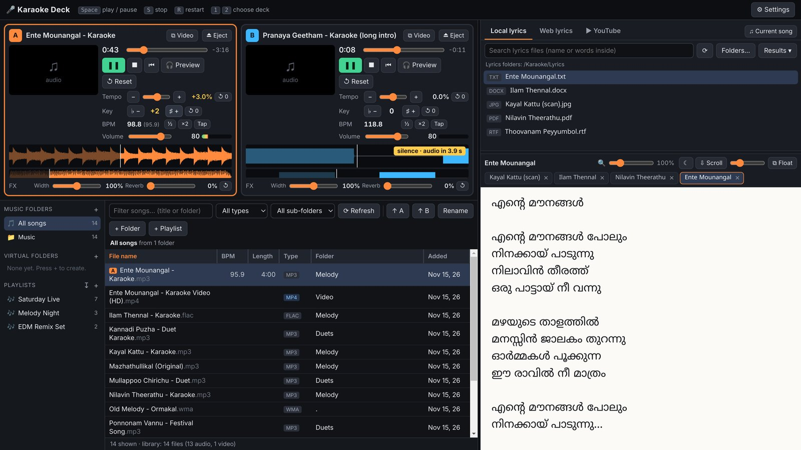
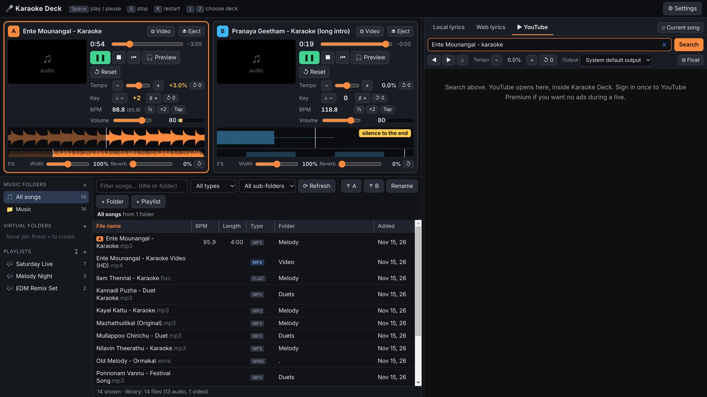
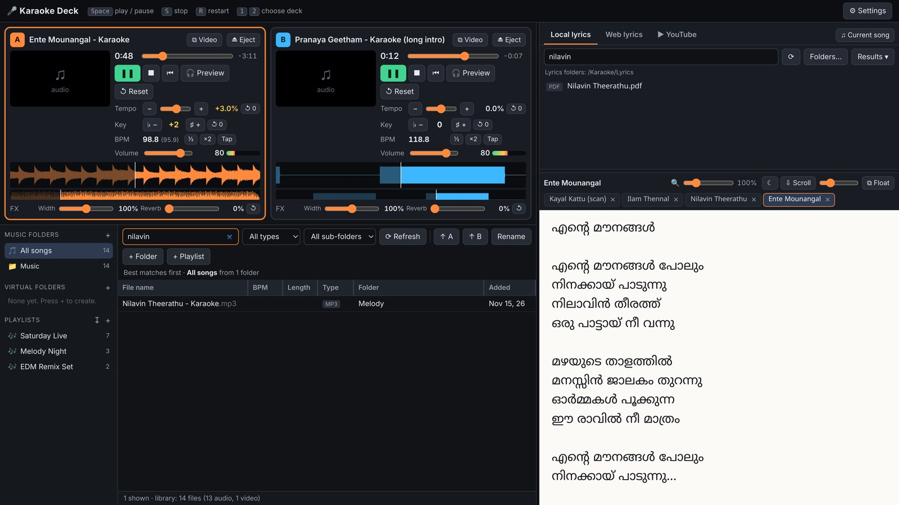
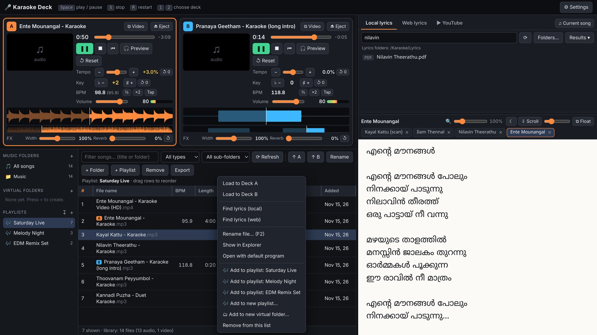
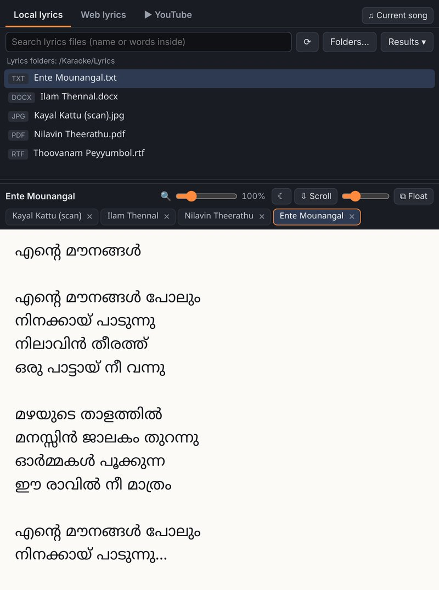
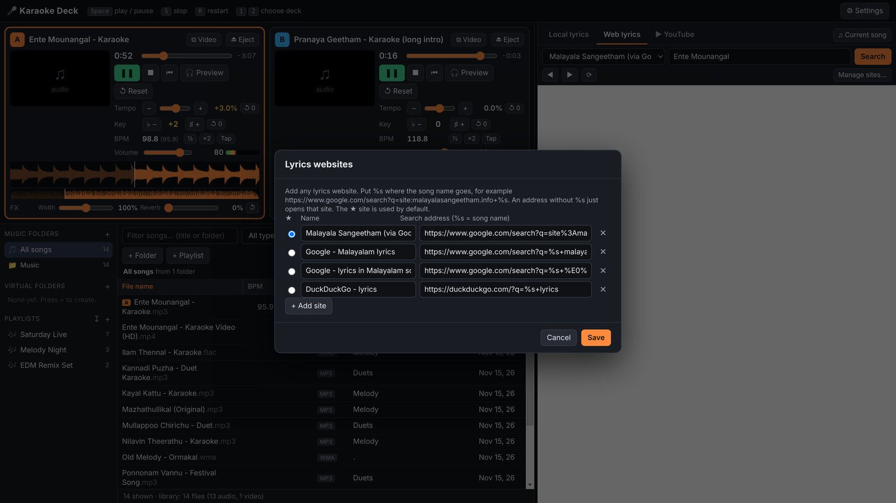
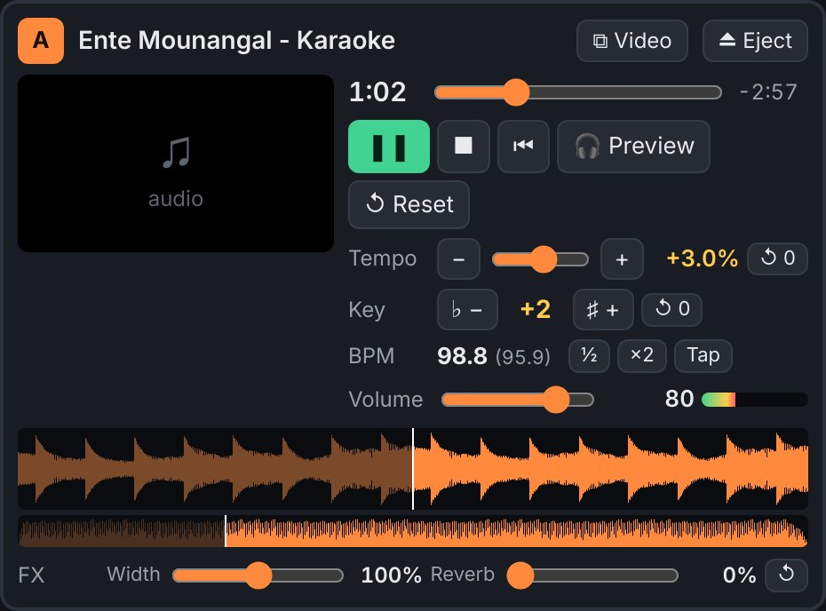
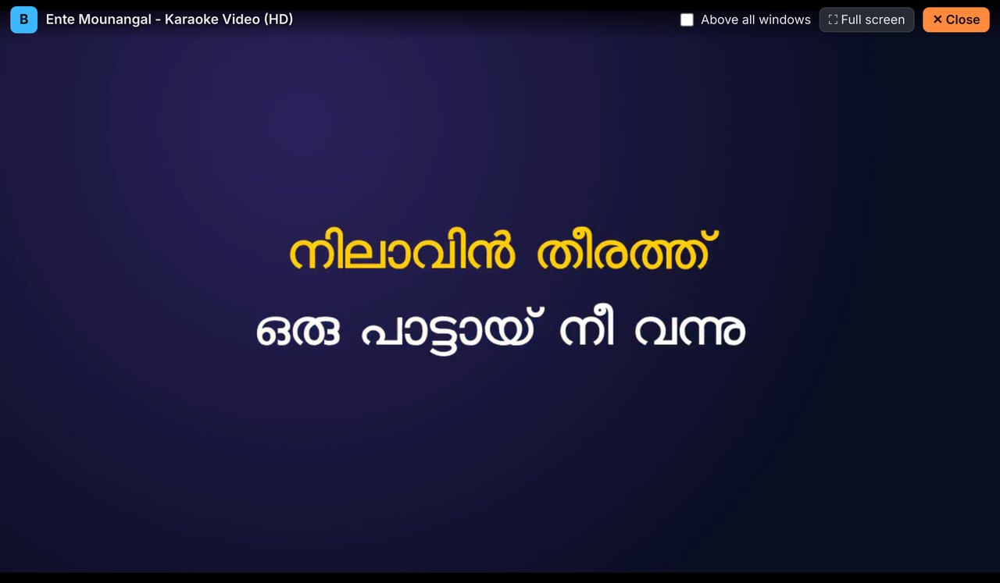
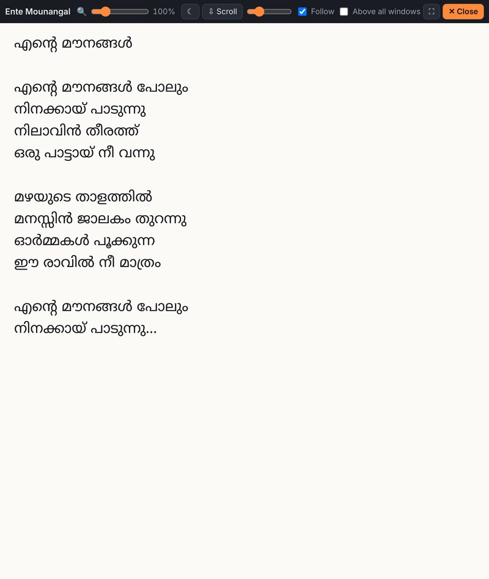

An all-in-one media player for Windows. Play audio and video on two decks, open lyrics from your own folders or the web, search YouTube, build playlists, and change key and tempo, all in one window. Also a karaoke player for live singers.
Created by Aji Gangadharan · Version 1.3
Download for Windows (free)Windows 10 / 11, 64-bit · about 150 MB · free · no installation needed

Load the next song while one plays. Each deck has its own volume, preview button and output.
Key up or down 5 half-steps without changing speed. Tempo ±30% without changing key. Works for audio and video.
See silences at the start, middle and end of a song before they catch you out on a live.
Point it at your lyrics folders and it shows any saved lyrics: Word (DOCX), PDF, TXT, RTF or a photo (JPG, PNG). Your last 8 lyrics stay open as tabs.
No lyrics saved? Search lyrics websites inside the player. Pick a site from the list or add your own.
Search YouTube karaoke and remix videos without leaving the player. Change the tempo, choose the output, or float the video.
Pop karaoke and lyrics videos out into its own window, full screen or always on top. It remembers where you put it.
One search finds the song and its lyrics at the same time, from any part of the name, even with spelling mistakes.
Custom playlists like any media player: drag to reorder, right-click to add, M3U export and import, virtual folders that never move your files, rename on disk.
MP3, WAV, FLAC, M4A, MP4, MKV and more. Unusual formats (WMA, AVI, VOB…) are converted automatically.








C:\Karaoke Deck.